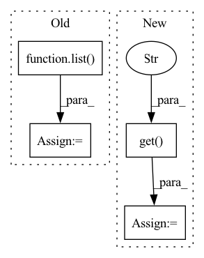

Pattern ID :21932
Before Change
encoder_arch = encoder_arch or BASIC_CNN_ARCH
decoder_input_shape = compute_decoder_input_shape_from_encoder(observation_space, encoder_arch)
print(f"Decoder input shape: {decoder_input_shape}")
reversed_architecture = list( reversed(encoder_arch))
self.initial_channels = reversed_architecture[0]["out_dim"]
self.initial_shape = int(math.sqrt(decoder_input_shape/self.initial_channels))
print(f"Initial channels: {self.initial_channels}")
print(f"Initial shape: {self.initial_shape}")After Change
decoder_layers = []
for i in range(len(reversed_architecture) - 1):
padding = reversed_architecture[i].get("padding" , 0)
decoder_layers.append(nn.Sequential(
nn.ConvTranspose2d(reversed_architecture[i]["out_dim"],
reversed_architecture[i+1]["out_dim"],
kernel_size=reversed_architecture[i]["kernel_size"],In pattern: SUPERPATTERN
Frequency: 3
Non-data size: 4
Instances Fragment ID: 69776656
Project Name: humancompatibleai/eirli
Commit Name: a1661a5c4b2ffc4efa61ce008a5370024010efd2
Time: 2020-09-08
Author: codywild@berkeley.edu
File Name: src/il_representations/algos/decoders.py
M Class Name: PixelDecoder
N Class Name: PixelDecoder
M Method Name: __init__(8)
N Method Name: __init__(8)
M Parent Class: LossDecoder
N Parent Class: LossDecoder
M File Name: src/il_representations/algos/decoders.py
N File Name: src/il_representations/algos/decoders.py
M Start Line: 196
M End Line: 199
N Start Line: 205
N End Line: 231
Before Change
from colour import Color
orange = Color("orange")
colors = list( orange.range_to(Color("purple"),len(input_constraints)))
import matplotlib as mpl
from mpl_toolkits.axes_grid1 import make_axes_locatable
divider = make_axes_locatable(plt.gca())
ax_cb = divider.append_axes("right", size="5%", pad=0.05)After Change
// TODO: Make plotting these optional via a flag
if show_BReach:
for info in kwargs.get("per_timestep", []):
ic = info.get("one_step_backprojection_overapprox" , None)
if ic is None: continue
rect = ic.plot(self.partitioner.animate_axes, self.partitioner.input_dims, self.estimated_one_step_backprojection_set_color, zorder=self.estimated_one_step_backprojection_set_zorder, linewidth=self.partitioner.linewidth, plot_2d=self.partitioner.plot_2d)
self.partitioner.default_patches += rect
Fragment ID: 69776658
Project Name: mit-acl/nn_robustness_analysis
Commit Name: e552f15f370e5f4bdc599078b7fd1dcf4357f03b
Time: 2022-05-13
Author: nrober1122@gmail.com
File Name: nn_closed_loop/nn_closed_loop/analyzers/ClosedLoopBackwardAnalyzer.py
M Class Name: ClosedLoopBackwardAnalyzer
N Class Name: ClosedLoopBackwardAnalyzer
M Method Name: visualize_single_set(13)
N Method Name: visualize_single_set(11)
M Parent Class: analyzers.Analyzer
N Parent Class: analyzers.Analyzer
M File Name: nn_closed_loop/nn_closed_loop/analyzers/ClosedLoopBackwardAnalyzer.py
N File Name: nn_closed_loop/nn_closed_loop/analyzers/ClosedLoopBackwardAnalyzer.py
M Start Line: 239
M End Line: 296
N Start Line: 172
N End Line: 305
Before Change
encoder_arch = encoder_arch or BASIC_CNN_ARCH
decoder_input_shape = compute_decoder_input_shape_from_encoder(observation_space, encoder_arch)
print(f"Decoder input shape: {decoder_input_shape}")
reversed_architecture = list( reversed(encoder_arch))
self.initial_channels = reversed_architecture[0]["out_dim"]
self.initial_shape = int(math.sqrt(decoder_input_shape/self.initial_channels))
print(f"Initial channels: {self.initial_channels}")
print(f"Initial shape: {self.initial_shape}")After Change
self.initial_layer = nn.Linear(representation_dim, decoder_input_shape)
decoder_layers = []
for i in range(len(reversed_architecture) - 1):
padding = reversed_architecture[i].get("padding" , 0)
decoder_layers.append(nn.Sequential(
nn.ConvTranspose2d(reversed_architecture[i]["out_dim"],
reversed_architecture[i+1]["out_dim"],
kernel_size=reversed_architecture[i]["kernel_size"], Fragment ID: 69776660
Project Name: humancompatibleai/eirli
Commit Name: a622ee5fd2d07564e97e04dff2680e6d9812cd91
Time: 2020-09-08
Author: codywild@berkeley.edu
File Name: src/il_representations/algos/decoders.py
M Class Name: PixelDecoder
N Class Name: PixelDecoder
M Method Name: __init__(8)
N Method Name: __init__(8)
M Parent Class: LossDecoder
N Parent Class: LossDecoder
M File Name: src/il_representations/algos/decoders.py
N File Name: src/il_representations/algos/decoders.py
M Start Line: 196
M End Line: 199
N Start Line: 205
N End Line: 231